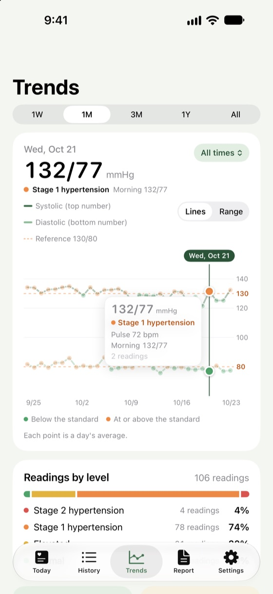
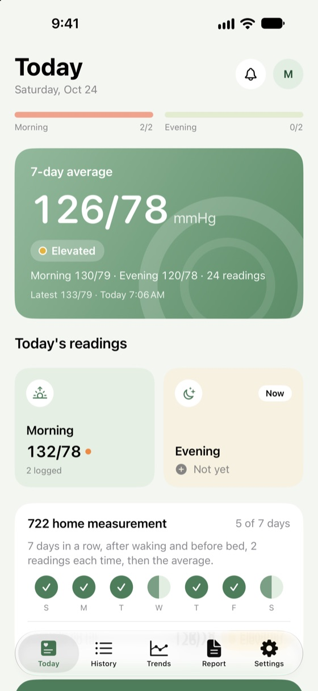
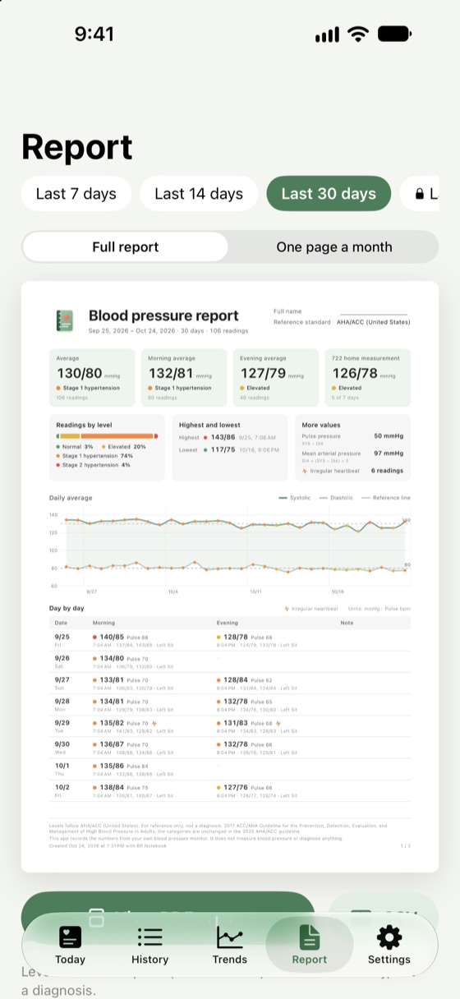

BP Notebook
BP NotebookLog in seconds
Big number keys, with morning and evening sorted for you. Tap "Save and measure again" for a second reading and the average is worked out.
Log each reading in seconds. Morning and evening averages are worked out for you, and your doctor gets a clear report.
BP Notebook doesn't measure blood pressure. Use it with your own monitor.



Built for measuring at home: big numbers and few steps.
Big number keys, with morning and evening sorted for you. Tap "Save and measure again" for a second reading and the average is worked out.
7 days in a row, 2 readings after waking and 2 before bed. The app keeps track and gives you the average.
Averages, levels, highest and lowest, a chart and every reading in one PDF. The last 30 days' report is free.
Lines or ranges, from a week to a year. Hold the chart to see any day.
Readings your monitor saves to Health come in by themselves, and what you log here is saved to Health too.
A notification or an alarm. Alarms ring even on silent, and stay quiet once you've logged that time of day.
Every level shows its source, and you can set the target your doctor gave you.
130/80 or higher is stage 1 hypertension (ACC/AHA 2017, unchanged in 2025)
Home readings of 135/85 or higher are hypertension (JSH2019)
At 130/80 or higher at home, adjust your routine and talk to your doctor (2022 Taiwan guidelines)
No sign-up, no ads, no tracking. Your readings stay on your iPhone; the app doesn't send them anywhere.
Upgrade to Pro when you need more. Your readings are never locked, even if Pro ends.
No. An iPhone can't measure blood pressure. Measure with your own monitor and log the numbers in the app, or let your monitor's app save them to Apple Health and they'll come in by themselves.
Turn on writing to Health in your monitor's own app, then connect in Settings > Apple Health in this app. From then on, blood pressure saved to Health shows up in the app by itself.
The app uses the published guideline for your country, which you can change in Settings > Standard. Your doctor sets targets for you personally, so follow your doctor's advice; you can also set the target your doctor gave you in the app.
They move with your iPhone when you transfer it using iCloud Backup or a computer backup. You can also use Settings > Export and backup > Export backup file, then Restore from backup file on the new iPhone.
Alarm reminders need iOS 26.1 or later, and the app must be allowed to schedule alarms in Settings > BP Notebook. Without that, reminders come as notifications. Once you've logged that time of day, it stays quiet that day.
Cancel in Settings > [your name] > Subscriptions. After moving to a new iPhone or reinstalling, tap Restore purchases on the Pro screen.
No, it stays on your iPhone. See the Privacy Policy.
Write to us and we'll usually reply within a few days. Please include your iPhone model and iOS version; there's no need to send your readings.
BP Notebook is for keeping records. It isn't a medical device and doesn't diagnose or treat anything. In an emergency, call 911 or your local emergency number.